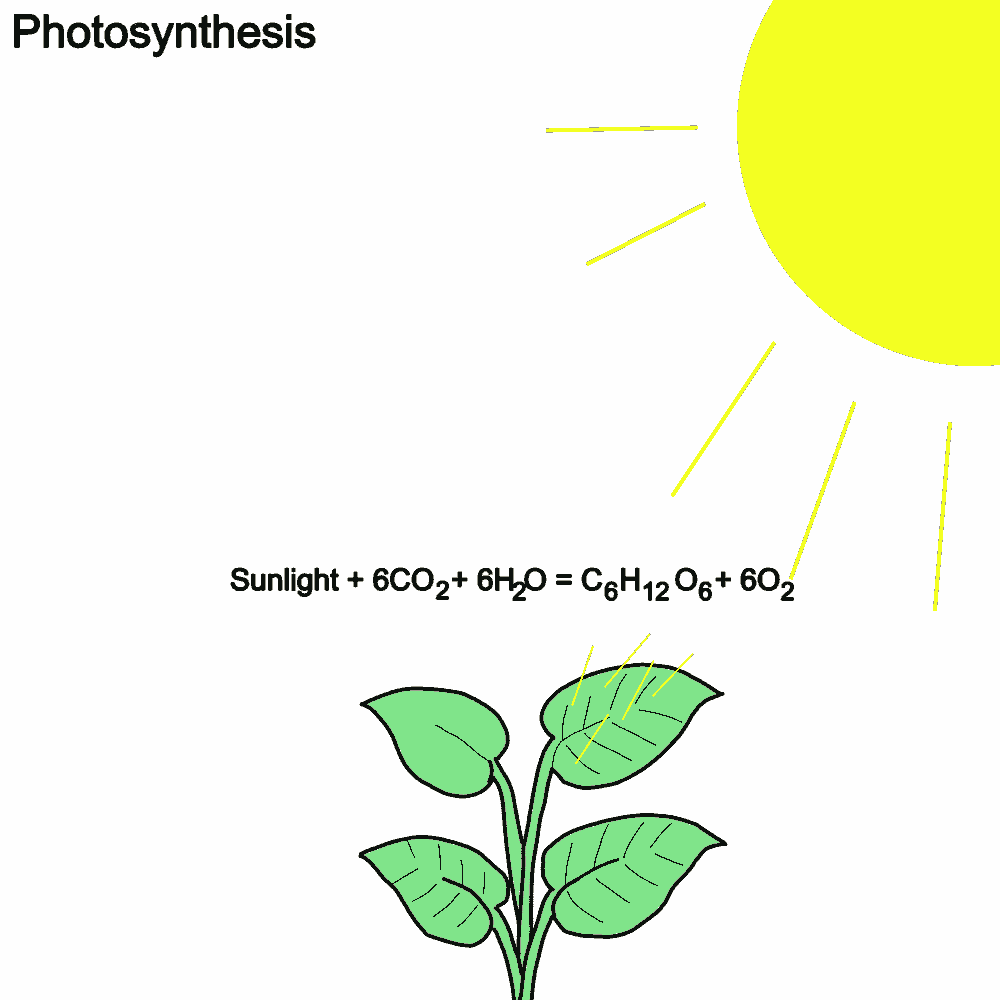
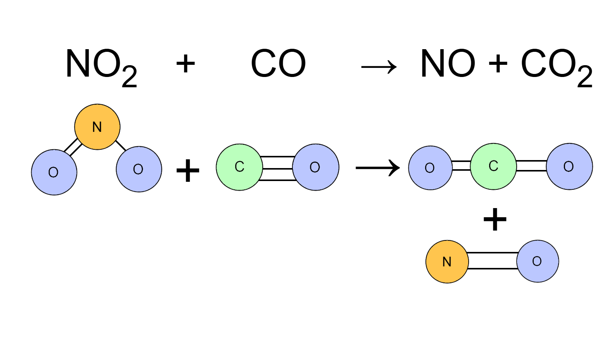

In chemistry, a chemical reaction is when two or more distinct chemicals called reactants are then transformed into "output" chemicals called products. On Earth, chemical reactions happen everywhere and at any time.
Reactants: Chemicals that change into products.
Products: Chemicals that are results from chemical reactions.
One particular example of a chemical reaction are when plants convert 6 carbon dioxide (CO2) and water (H2O) molecules into glucose (C6H12O6) and leftover oxygen molecules by using light energy from the Sun...

This chemical process that plants perform results in glucose which nourishes the plant and helps it grow.
When a chemical reaction happens, the chemical bonds of the molecules in the reactants involved break apart, and the now unbonded atoms will rearrange into new chemical bonds which make up the products. The electrons in the reactants will also rearrange themselves during the reaction to form unique properties for the products. An example of this would be the chemical reaction between nitrogen dioxide (NO2) and carbon monoxide (CO)...

Chemical Bonds: Intramolecular forces that hold atoms together in a molecule.
Chemical Equations: A way to represent a chemical reaction alphanumerically.
Reaction Mechanism: A sequence of elementary reactions that the reactants perform to change into products.
A chemical reaction can be represented as a chemical equation in where the reactants and products are alphanumerically written with the reactants turning into products by using an arrow sign (→)...